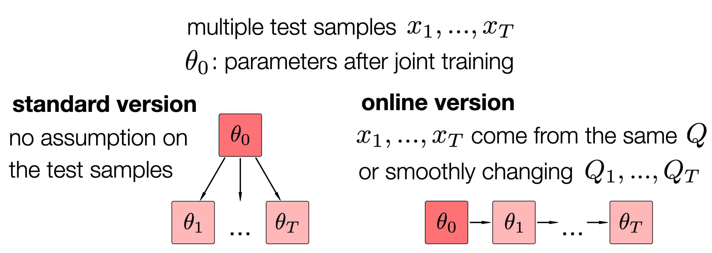
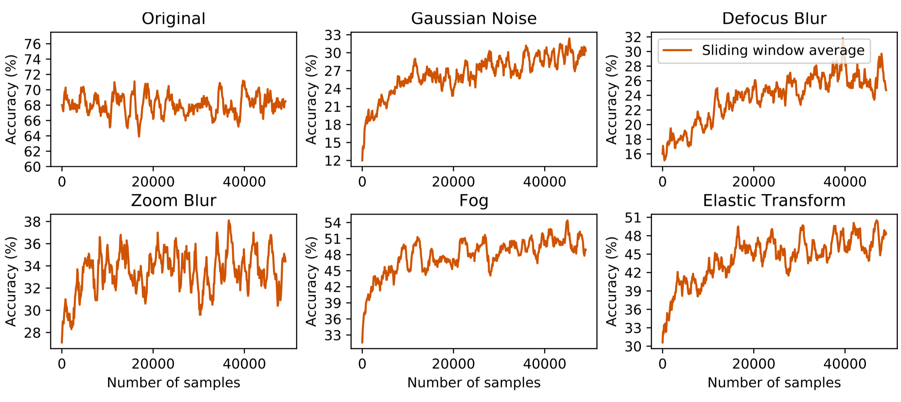

In this paper, we propose Test-Time Training, a general approach for improving the performance of predictive models when training and test data come from different distributions. We turn a single unlabeled test sample into a self-supervised learning problem, on which we update the model parameters before making a prediction. This also extends naturally to data in an online stream. Our simple approach leads to improvements on diverse image classification benchmarks aimed at evaluating robustness to distribution shifts.
Given model parameters \(\theta\) and a loss function \(\ell\), the standard test error is evaluated as the expected loss on a test distribution \(Q\). Test-Time Training modifies the expected loss and allows \(\theta\) to depend on the test input \(x\), without looking at the label \(y\).
We use self-supervision to create label from unlabeled input. The form of self-supervision used here is rotation prediction (Gidaris et al. 2018), which rotates an input image by multiples of 90°, and asks a model to solve the four-way classification problem. Our model has both a self-supervised head \( \theta_s \) and a main task head \( \theta_m \), on top of a shared feature extractor \( \theta_e \).
At training time, we jointly optimize the self-supervised loss \( \ell_s \) and the main task loss \( \ell_m \) over the training distribution \(P\), where the main task label \(y\) is available. At test time, we cannot see the main task label, but we can still optimize the self-supervised loss over the single test input drawn from \(Q\) (grayed out because this expectation can be noisy). This produces \(\theta(x)\), which we then use to make a prediction on \(x\).
If samples arrive in an online stream, the online version of our method keeps the state of the parameters across samples. While the standard version follows the standard setting of supervised learning, the online version makes the additional assumption that samples are produced by the same or smoothly changing distribution shifts.
We experiment on CIFAR-10-C (Hendrycks et al. 2019), a standard object recognition benchmark that evaluates generalization across 15 types of corruptions. Test-Time Training (TTT) standard version makes significant improvements over the two baselines without hurting on the original distribution. The online version makes even more improvements.
We plot the accuracy of the online version as it progresses through test sets in ImageNet-C, the counterpart of CIFAR-10-C for ImageNet. Online TTT generalizes better as more samples are evaluated (x-axis), without hurting on the original distribution.
For more results on more benchmarks, please take a look at our full paper.
In the end, we hope this paper can encourage researchers to abandon the self-imposed constraint of a fixed decision boundary for testing, or even the artificial division between training and testing altogether. Our work is but a small step toward a new paradigm where much of the learning happens after a model is deployed.
This work is supported by NSF grant 1764033, DARPA and Berkeley DeepDrive. This paper took a long time to develop, and benefited from conversations with many of our colleagues, including Ben Recht and his students Ludwig Schmidt, Vaishaal Shanker and Becca Roelofs; Ravi Teja Mullapudi, Achal Dave and Deva Ramanan; and Armin Askari, Allan Jabri, Ashish Kumar, Angjoo Kanazawa and Jitendra Malik.